| Lancer les Activités | Index | D'une Activité à une autre |
Il y a deux façons, similaires mais différentes, de collaborer via Sugar:
La différence entre les deux façons est subtile mais importante. Lorsque vous envoyez une invitation, vous gardez un contrôle précis de qui vous rejoint. Lorsque vous partagez avec le voisinage, l'Activité que vous aurez ouverte le sera aussi pour toutes les personnes visibles dans la Vue de Voisinage.
Si vous désirez qu'un ami vous rejoigne dans une Activité, envoyez-lui une invitation. Vous pouvez inviter autant d'amis que vous le voulez en suivant les étapes ci-dessous; l'exemple présenté indique comme inviter quelqu'un pour parler avec lui dans l'Activité Chat.
Votre Activité doit être ouverte afin de pouvoir envoyer une invitation.
Par exemple, ouvrez l'Activité Chat depuis la Vue Accueil.
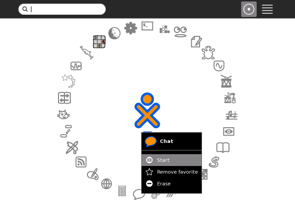
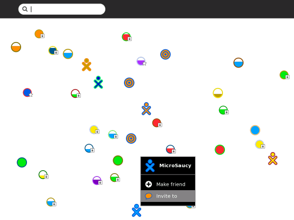
Votre ami reçoit l'invitation.
Par exemple, revenez sur l'Activité Chat.
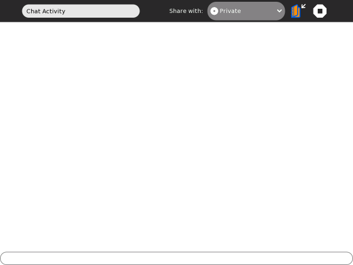
La notification de l'invitation apparaît dans le coin supérieur gauche de l'écran ainsi que dans le Cadre.
L'invitation est une icône d'Activité. L'icône est de la couleur de la personne qui a envoyé l'invitation.
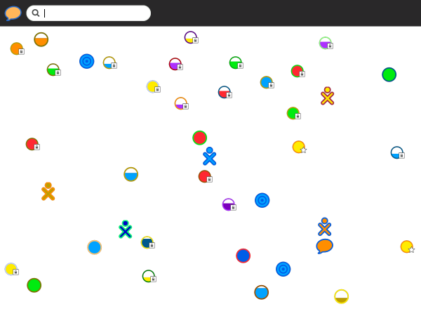
Vous pouvez accepter l'invitation depuis la Vue de Voisinage ou depuis le Cadre.
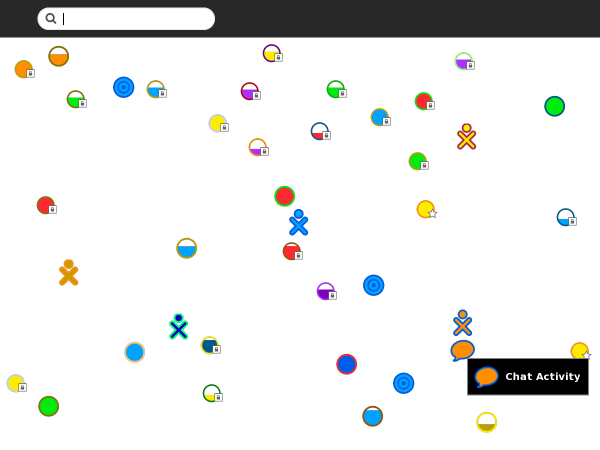
Dans la Vue de Voisinage, cliquez sur l'icône de l'autre utilisateur.
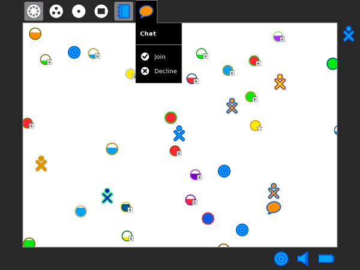
Dans le Cadre, cliquez sur l'icône de l'invitation ou cliquez Rejoindre dans le menu déroulant de l'icône.
Note: Vous n'êtes pas obligé d'accepter une invitation. Il vous suffit de l'ignorer ou de cliquer Refuser dans le menu déroulant de l'icône.
Dès que vous avez accepté une invitation, revenez dans l'Activité.
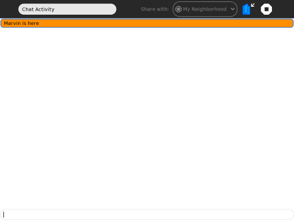
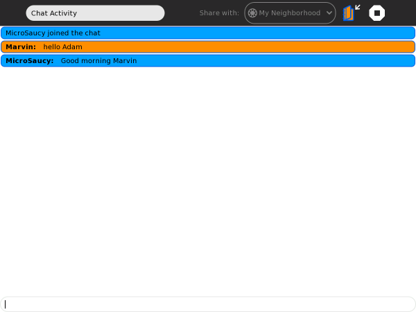
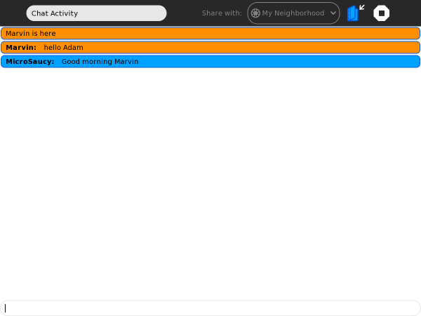
Lorsque vous collaborez, l'icône de la personne avec qui vous collaborez apparaît dans le Cadre.
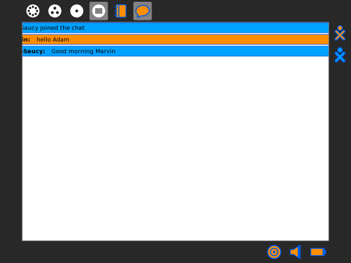
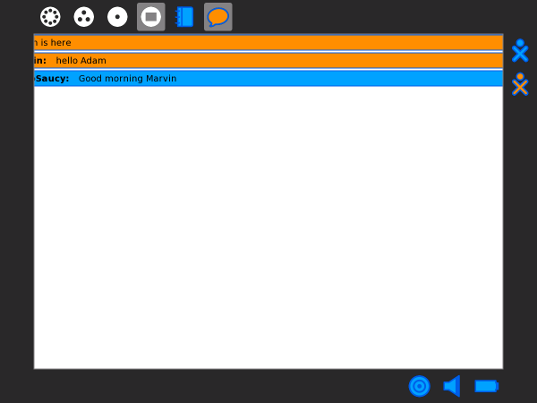
Lorsque vous quittez l'Activité, vous mettez fin à la collaboration.
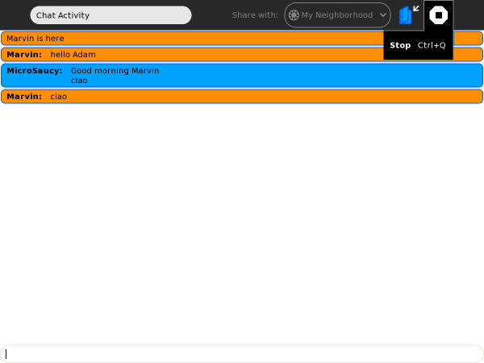
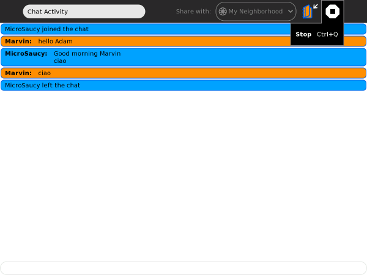
Vous pouvez partager une Activité avec toute personne dont l'icône est visible dans la Vue de Voisinage.
Votre Activité doit être démarrée pour pouvoir la partager.
Par exemple, démarrez Enregistrer depuis la Vue Accueil.
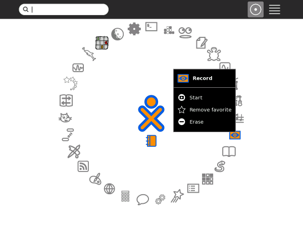
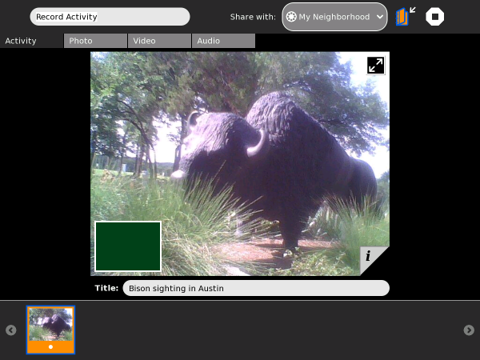
Une icône représentant votre Activité partagée apparaît dans la Vue de Voisinage.
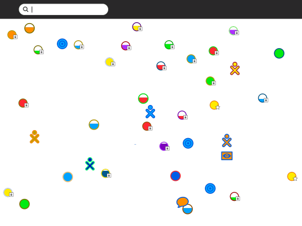
Votre icône XO apparaît alors en-dessus de l'icône de l'Activité dans la Vue de Voisinage.
Vous pouvez rejoindre toute Activité qui apparaît dans la Vue de Voisinage.
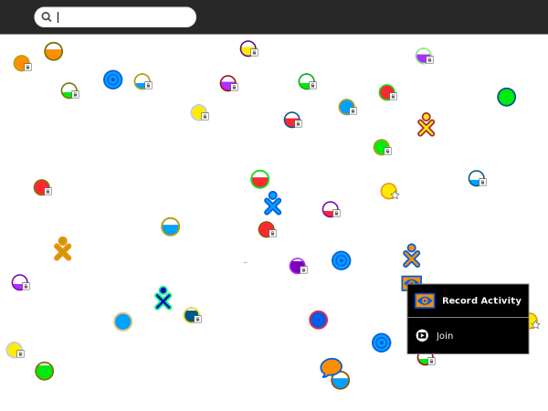
L'Activité s'ouvre dès que vous aurez cliqué sur son icône.
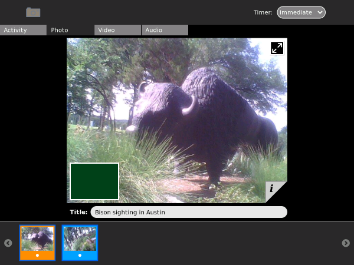
La manière de collaborer varie selon les Activités. Dans l'Activité Enregistrer, des onglets de photographies sont partagés. Le cadre de la photographie est de la même couleur que la couleur de l'icône du photographe.
Dans votre Cadre, vous pouvez voir les icônes de tous ceux qui collaborent avec vous.

Vous pouvez quiter une Activité à n'importe quel moment.
| Lancer les Activités | Index | D'une Activité à une autre |